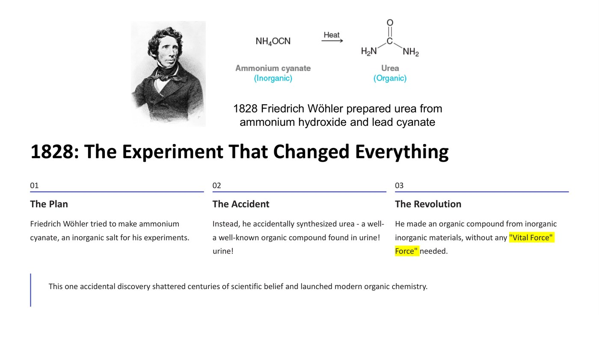

CHE105 · 第 1 章
有机化学导论：从“生命力”到尿素合成
Introduction to Organic Chemistry
虚线下划线为术语；悬停查看中文、英文与释义，完整词典见“术语”。
本章目录
本章回答三个问题：有机化学从哪里来、"有机"到底指什么、碳凭什么能撑起整门学科。最后落到本课程最基本的手上功夫——把碳骨架画出来，再补全氢。
本章要点
- 有机化学与无机化学的分界是历史形成的：一个来自生物体，一个来自无生命物质。
- 1828 年 Wöhler 由无机盐意外得到尿素，证伪了"生命力说"，现代有机化学由此开始。
- 今天的操作定义是"含碳化合物"，但 CO₂、金刚石、石墨不算有机；重点是烃及其含 O、N、S、卤素的衍生物。
- 碳的特殊性来自四价、优异的自连能力（catenation）、短而强的键，以及与其他元素的兼容性。
- 有机反应的一般图景：一个分子的富电子区域进攻另一个分子的缺电子位点。
- 碳骨架由碳的排列决定，直链与弯链是同一骨架；单键可自由旋转。
- 补氢规则：按该碳"连了几个其他原子"决定剩余氢数，双键按连两个原子计。
1.1 两门化学的分界
在化学还没有成为一门系统科学之前，人们按来源把物质分成两类。无机化学inorganic chemistry研究来自无生命物质的化合物——岩石、矿物、金属与空气；有机化学organic chemistry研究来自生物体的化合物——植物、动物，以及一切活着的东西。这个划分不是实验结论，而是来源上的约定。
两门学科的发展节奏也不一样。无机化学的实践起源极早，可追到石器时代与青铜时代；有机化学的实践出现得晚得多，早期只体现在酿造与医药中。作为科学，无机化学的系统化从炼金术经 Lavoisier、Dalton 一路走来，历时更长；有机化学则要到 1828 年 Wöhler 合成尿素才正式"出生"。更关键的差别在早期认知：无机化学研究的是"没有生命"的物质，有机化学却被认为必须依赖一种生命力vital force，只能在生物体内产生。
| 维度 | 无机化学 | 有机化学 |
|---|---|---|
| 研究对象 | 来自无生命物质的化合物 | 来自生物体的化合物 |
| 实践起源 | 极早（石器、青铜时代） | 较晚（古代酿造、医药） |
| 科学史长度 | 较长，17–18 世纪系统化 | 较短，1828 年起算 |
| 早期认知 | 研究"无生命"物质 | 认为需要生命力 |
| 关键突破 | 从炼金术哲学转向实验科学 | 证伪生命力说 |
L1 p.3–4
1.2 1828：一次意外改写教科书
Friedrich Wöhler 原本的计划很平常：制备氰酸铵ammonium cyanate，一种无机盐，用于他的实验。结果他得到的不是目标产物，而是尿素urea——一种早已为人熟知、存在于尿液中的有机化合物。讲义图注给出的另一条路线是由氢氧化铵（ammonium hydroxide）与氰酸铅（lead cyanate）制备尿素。
这次意外之所以重要，不在于产物本身，而在于它证明了什么：有机化合物可以由无机原料合成，全程不需要任何"生命力"。三件事凑在一起才构成革命——目标是无机物、产物是有机物、过程在实验室而非生物体内完成。延续数百年的科学信念就此被击碎，现代有机化学随之启动。

L1 p.4–5、p.8
1.3 什么算有机化合物
把定义收紧的人是瑞典化学家 Jöns Jakob Berzelius（1779–1848）。他给出的说法是：有机化学研究含碳（C）的化合物。这个定义至今仍是课堂上的起点，因为地球上所有生命都建立在有机化学之上——DNA 由核苷酸构成，蛋白质由氨基酸构成。
Berzelius 的贡献远不止一个定义。他创建了现代元素符号（H、O、Fe）与化学式（H₂O），这是化学全球交流的基础；他精确测定了原子量，为化学计量学与元素周期表的发现铺路；他提出了 catalysis、isomerism、polymer 三个至今仍在使用的术语；他分离并发现了 Ce、Se、Si、Th 等元素；他还提出了化学键理论的早期尝试——电化学二元论（electrochemical dualism）。1815 年，他又为"生命力说"写下了三条原则，把自己的名字同时留在了被推翻的一方。
但那句"含碳"有一个必须记住的"但是"：并非所有含碳化合物都算有机。二氧化碳carbon dioxide、金刚石与石墨都被归为无机。真正的判据落在烃hydrocarbon上——只含 C 和 H 的化合物——以及它们带有氧、氮、硫、卤素的衍生物。换句话说，有机化学的核心是"碳骨架 + 少量杂原子"的组合，而不是元素周期表上所有含碳的角落。
顺带一提，"organic"在英语里有三层含义，讲义特意并列出来：在食品生产中指不使用人工化学品；在生物语境中指来自动植物；在化学中指含碳的物质。三者不能互换。
L1 p.6–9、p.21
1.4 它就在你身边
讲义用一整天的时间线说明这门学科的范围：早晨咖啡的香气来自挥发性有机物volatile organic compounds；手机屏幕依赖塑料与聚合物；棉、聚酯、尼龙都是有机材料；糖与碳水化合物为身体供能。再往里看，蛋白质构建肌肉、皮肤与器官，脂肪与碳水化合物提供能量，DNA 与 RNA 携带遗传指令，dopamine 这类神经递质neurotransmitter塑造情绪与感受。
这门学科也在持续产出：1859 年第一口油井出油，1908 年第一种合成塑料问世，1928 年发现青霉素，1953 年确定 DNA 结构。今天每年生产数十亿磅塑料、持续开发新药，并用于理解天然过程与环境过程、设计骨移植与细胞膜等生物材料、改良食品供应。这些成就背后都需要对有机化学的细致理解。
讲义还给了一个学习上的比喻，值得记住：原子是字母，官能团是单词，反应是句子和故事。学语言不会去背整本字典，而是掌握语法规则再反复练习——有机化学同理。配套的五条策略是：不要临时抱佛脚（知识是累积的，要定期复习）；主动练习（画结构、解题，这是手上的技能）；用 3D 模型（三维视角能让结构"对上"）；提问（课上、答疑时间、任何地方）；联系现实（常问"我在生活里哪里见过它"）。
L1 p.11–14、p.22
1.5 碳凭什么特殊
碳的基态电子构型是 [He] 2s²2p²。它既不容易失去四个电子，也不容易得到四个电子，因此形成碳离子的过程在能量上不利；它的电负性是 2.5，恰好落在大多数金属与非金属之间。两个事实指向同一个结论：碳更愿意共享电子，也就是形成共价键。
第二个性质是自连catenation——碳能与自身成键，形成稳定的链、环与支链结构。碳原子半径小，所以 C–C 键短而强；键短又让 π 键容易形成，化合物的种类因此大幅增加。讲义把碳的优势归为四条：四价（tetravalency）、优异的自连、强而多能的成键、与其他关键元素的兼容性。四者叠加，才使碳能构成数量近乎无限、稳定且复杂的分子。
与同族的硅对比，差别立刻显现。同族自上而下原子变大，同种原子之间的键变长变弱，所以 C–C 键远强于 Si–Si 键。更微妙的是，C–C、C–O、C–Cl 三种键的键能非常接近，这意味着碳化合物可以在多种反应中保持稳定；硅化合物做不到这一点。此外，硅拥有能量较低、可参与反应的 d 轨道，因此硅化合物比碳化合物更活泼。讲义用了一个比喻：碳是有机化合物里的"红砖"——最普通、最结实、到处都在用的那种建材。
L1 p.23–27
1.6 杂原子：反应的入口
许多有机化合物含有杂原子heteroatom，即 C 与 H 以外的原子，最常见的是 O、N 与卤素。杂原子的引入不只是换个原子，它同时改变了电子分布与成键方式，化学多样性由此大幅增加。
讲义给出了理解有机反应的总纲：大多数反应发生在"一个分子的富电子区域"与"另一个分子的缺电子位点"之间。C–C 键与 C–H 键倾向于不反应——它们电子分布均匀，没有明显的富电子或贫电子端点。而碳与杂原子之间的键通常是极性键polar bond，电子密度偏向电负性更大的一方，于是分子中出现了一块缺电子的碳和一块富电子的杂原子，两者都成了反应的入口。
这条总纲会在第四章（分子轨道）与第五章（HOMO–LUMO）被反复使用：所谓"富电子区域"，本质上是一个能量较高、填满电子的轨道；所谓"缺电子位点"，本质上是一个能量较低的空轨道。
Clean vector diagram showing four small organic molecules side by side to illustrate heteroatom diversity: ethane as a nonpolar C-C and C-H reference, ethanol with a polar C-O bond, ethanamine with a polar C-N bond, and chloroethane with a polar C-Cl bond. Each polar bond is marked with a small partial positive and partial negative label, and the heteroatom is highlighted in a warmer accent colour. Flat 2D, thin 1.5 px strokes, muted slate blue and warm grey palette with one warm accent, white background, English labels, no cartoon, no gradient, no shadow.
L1 p.28–29
1.7 碳骨架与"加氢"
每个碳原子最多形成四根键。这四根键可以是四个单键，也可以是一个双键加两个单键，或者一个三键加一个单键。碳原子的排列方式决定了碳骨架carbon skeleton，而骨架一旦确定，分子的身份就基本确定。
画骨架时有两条容易忽略的等价性。第一，直链与弯链代表同一个骨架——把一条链画成锯齿状只是书写习惯，不是新分子。第二，由单键连接的基团可以自由旋转，所以向下的支链与向上的支链是同一个结构。这两条合起来解释了为什么"同一个分子"可以有看起来完全不同的几种画法。
骨架画好之后要补氢。规则只有一句：数这个碳连了几个其他原子。连 1 个其他原子，补 3 个 H；连 2 个，补 2 个 H；连 3 个，补 1 个 H；连满 4 个，不再补 H。带重键的碳按"占位"折算：双键碳视作连了 2 个其他原子，双键加单键的碳或三键碳视作连了 3 个其他原子。
Clean vector instructional diagram in two rows: top row shows the same five-carbon skeleton drawn as a straight zigzag chain, a bent chain, and a branched chain, each labeled as the same skeleton; bottom row shows three carbon atoms with one, two, and three neighbouring atoms respectively, with the correct number of hydrogen atoms added and labeled 3 H, 2 H, 1 H. Flat 2D, thin 1.5 px strokes, muted slate blue and warm grey palette, white background, English labels, no cartoon, no gradient, no shadow.
L1 p.30–34
1.8 画烃的三道练习
讲义给出的作图方法是固定的：先画最长碳链，再逐步缩短主链、把支链放到不同位置，最后补氢使每个碳凑满四根键。这个方法的价值在于"不重不漏"——先穷尽长链，再穷尽短链，就不会漏掉异构体。
第一题：6 个碳、无重键、无环。先画 6-C 直链；再画 5-C 链加一个甲基，甲基可以在 2 位或 3 位（4 位与 2 位等价，因为链可以反向读）；再画 4-C 链加两个甲基，两个甲基可以在同一碳上（2,2）或分居两碳（2,3）。
第二题：4 个碳、一个双键、无环。双键可以在链端（1-butene），也可以在链中（2-butene）；还可以把主链缩到 3 个碳，让双键碳上挂一个甲基（2-methylpropene）。第三题：4 个碳、无重键、一个环。四元环是环丁烷；三元环再挂一个甲基是甲基环丙烷。
L1 p.35–38
1.9 课程地图
本模块 2.5 学分，每周 1 小时 lecture 加 1 小时 tutorial。考核由三部分组成：期末考试 60%，Coursework 1 为课堂小测 20%（共十次 mini-quiz），Coursework 2 为课后作业 20%。
课程内容分九块，顺序就是本复习站的章节顺序：有机结构（organic structures）、分子结构（structure of molecules）、有机反应（organic reactions）、羰基的亲核加成、离域与共轭、酸性碱性与 pKa、羰基上的亲核取代、羰基氧被取代的反应、立体化学。推荐教材为 Clayden 等人的 Organic Chemistry（Oxford University Press, 2001），对应第 2、4–11、14–17、19–21 章；讲义另列 Housecroft 与 Constable 的普通化学教材作参考。
讲师在最后给了一条很实在的提醒：课上尽量用英文思考。有机化学的术语体系是英文的，早一点把"nucleophile""electrophile""hybridization"当成母语词汇，后面读题会轻松很多。
L1 p.17–20